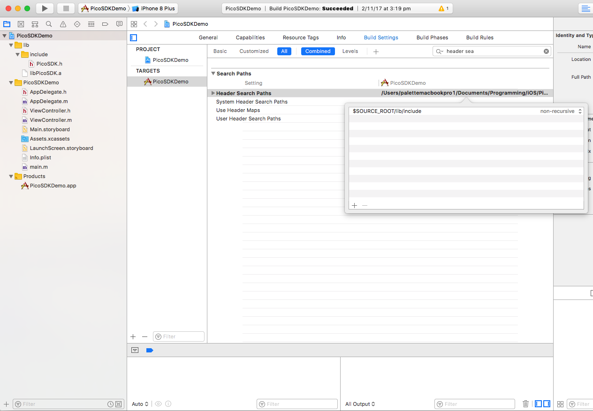
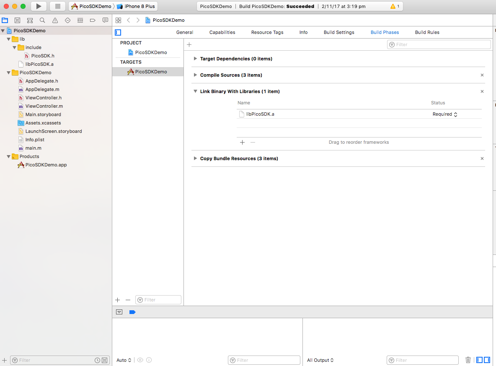
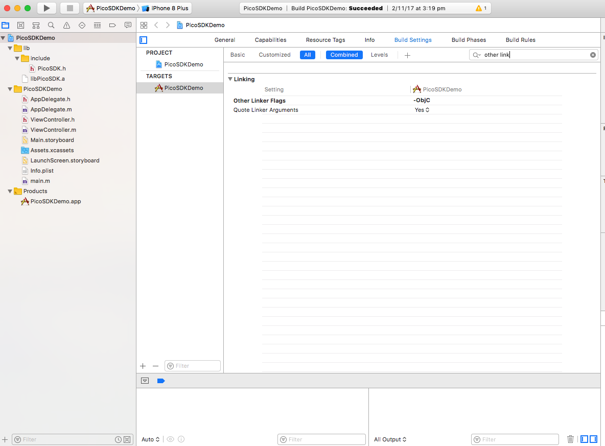

# Contents
---
1. [Project Setup](#project-setup)
2. [Classes](#classes)
* [Color](#cls-color)
* [CULAB](#cls-lab)
* [CUMatch](#cls-match)
* [CUSensorData](#cls-sensordata)
* [CUSwatch](#cls-swatch)
* [CUSwatchMatcher](#cls-swatchmatcher)
* [Hardware](#cls-hardware)
* [CUPico](#cls-pico)
* [CUBatteryStatus](#cls-picobatterystatus)
* [CUPicoDelegate](#cls-picodelegate)
* [CUPicoConnector](#cls-picoconnector)
* [CUPicoConnectorDelegate](#cls-picoconnectordelegate)
<br><br>
# Project Setup <a name="project-setup"></a>
---
A sample project named `PicoSDKDemo` is provided that will get a working app up and running as quick as possible. Alternatively the SDK can be imported into a Objective-C project as detailed below.
### Adding the SDK
Add everything from the directory `StandaloneLib` to the project.
In the project root node, go to `Build Settings` and add the include directory to `Header Search Paths`. In `PicoSDKDemo` this is `$SOURCE_ROOT/lib/include`.

<br><br>
Go to `Build Phases` and add `libPicoSDK.a` to `Link Binary With Libraries`.

<br><br>
Go back to `Build Settings` and add `-ObjC` to `Other Linker Flags`.

<br><br>
The SDK should now be available to the project. Refer to the sample project for example usage and further documentation.
<br><br><br>
# Classes <a name="classes"></a>
---
### Color <a name="cls-color"></a>
#### CULAB <a name="cls-lab"></a>
> Represents a color in the LAB color space.
```
@property double l
@property double a
@property double b
```
The three LAB color components.
```
- (UIColor *)color
```
Converts the LAB to SRGB represented as a `UIColor`.
<br><br>
```
- (double)distance:(CULAB *)lab
```
The Euclidean distance between itself and `lab`.
<br><br>
```
- (double)distanceSquared:(CULAB *)lab
```
This is simply Euclidean distance without taking the square root. Used to efficiently compare distance between two LAB where actual distance is not necessary.
<br><br><br>
#### CUMatch <a name="cls-match"></a>
>Output for [`CUSwatchMatcher`](#cls-swatchmatcher) containing match data.
```
@property CUSwatch *swatch
@property double distance
@property double distanceSquared
```
<br><br><br>
#### CUSensorData <a name="cls-sensordata"></a>
> Represents the raw values from the sensor. These values do not directly map to the RGB color space.
```
@property NSInteger r
@property NSInteger g
@property NSInteger b
```
<br><br><br>
#### CUSwatch <a name="cls-swatch"></a>
> Represents a color with allowance for name and code fields.
```
@property NSString *name
@property NSString *code
@property CULAB *lab
```
<br><br><br>
#### CUSwatchMatcher <a name="cls-swatchmatcher"></a>
>Class for finding the closest color matches for a specified color.
```
+ (CUMatch *)getMatch:(CULAB *)lab swatches:(NSArray *)swatches
```
Gets the closest match to `lab` from `swatches`. Returns `nil` if no match is found.
<br><br>
```
+ (NSArray *)getMatches:(CULAB *)lab swatches:(NSArray *)swatches numMatches:(NSUInteger)numMatches
```
Gets the closest matches to `lab` from `swatches` sorted by ascending distance order.
<br><br><br>
### Hardware <a name="cls-hardware"></a>
#### CUPico <a name="cls-pico"></a>
>Represents a connected Pico device. Exposes the interface for communcating with Pico.
```
@property NSString *name
@property NSString *serial
```
Various attributes related to the connected Pico.
<br><br>
```
- (void)disconnect
```
Sends a disconnect request to Pico. [`CUPicoDelegate.onDisconnect(CUPico *, NSError *)`](#func-ondisconnect) is called when the disconnection is complete.
<br><br>
```
- (void)sendLabDataRequest
```
Sends a color scan request to Pico. Responses are sent to [`CUPicoDelegate.onFetchLabData(CUPico *, CULAB *)`](#func-onfetchlabdata).
<br><br>
```
- (void)sendSensorDataRequest
```
Sends a sensor data request to Pico. Reads raw sensor values without firing LEDs. Responses are sent to [`CUPicoDelegate.onFetchSensorData(CUPico *, CUSensorData *)`](#func-onfetchsensordata).
<br><br>
```
- (void)sendCalibrationRequest
```
Sends a calibration request to Pico. Responses are sent to [`CUPicoDelegate.onCalibrationComplete(CUPico *)`](#func-oncalibrationcomplete).
<br><br>
```
- (BOOL)sendBatteryLevelRequest
```
Sends a battery level request to Pico. Responses are sent to [`CUPicoDelegate.onFetchBatteryLevel(CUPico *, NSInteger)`](#func-onfetchbatterylevel). Returns `NO` if the connected Pico does not support this request.
<br><br>
```
- (BOOL)sendBatteryStatusRequest
```
Sends a battery status request to Pico. Responses are sent to [`CUPicoDelegate.onFetchBatteryStatus(CUPico *, CUBatteryStatus)`](#func-onfetchbatterystatus). Returns `NO` if the connected Pico does not support this request.
<br><br>
```
- (void)setScanRawAdjustment:(float)a b:(float)b c:(float)c
```
Sets the raw adjustment values for scans which affect the nature of color calculations.
<br><br><br>
#### CUBatteryStatus <a name="cls-picobatterystatus"></a>
>The possible outcomes of a battery status request.
```
CUBatteryStatusUnknown
```
Unknown status.
<br><br>
```
CUBatteryStatusNotCharging
```
Pico is not connected via USB.
<br><br>
```
CUBatteryStatusCharging
```
Pico is connected via USB and is charging.
<br><br>
```
CUBatteryStatusCharged
```
Pico is connected via USB and is fully charged.
<br><br><br>
#### CUPicoDelegate <a name="cls-picodelegate"></a>
>Callbacks for [`CUPico`](#cls-pico).
<a name="func-ondisconnect"></a>
```
- (void)onDisconnect:(CUPico *)pico error:(NSError *)error
```
Called when Pico has disconnected.
<br><br>
<a name="func-onfetchlabdata"></a>
```
- (void)onFetchLabData:(CUPico *)pico lab:(CULAB *)lab
```
Called when a color scan request has completed.
<br><br>
<a name="func-onfetchsensordata"></a>
```
- (void)onFetchSensorData:(CUPico *)pico sensorData:(CUSensorData *)sensorData
```
Called when a sensor data request has completed.
<br><br>
<a name="func-oncalibrationcomplete"></a>
```
- (void)onCalibrationComplete:(CUPico *)pico
```
Called when calibration has been completed.
<br><br>
<a name="func-onfetchbatterylevel"></a>
```
- (void)onFetchBatteryLevel:(CUPico *)pico level:(NSInteger)level
```
Called when a battery level request has completed. `level` ranges from `0` to `100`. Note that `level` may report an incorrect value when Pico is charging.
<br><br>
<a name="func-onfetchbatterystatus"></a>
```
- (void)onFetchBatteryStatus:(CUPico *)pico level:(CUBatteryStatus)status
```
Called when a battery status request has completed.
<br><br><br>
#### CUPicoConnector <a name="cls-picoconnector"></a>
>Used to scan and connect to Pico via bluetooth.
```
- (void)connect
```
Starts trying to connect to a Pico device via bluetooth. Success/failure result is passed to [`CUPicoConnectorDelegate`](#cls-picoconnectordelegate). Scanning is stopped upon successful connection.
<br><br>
```
- (void)cancelConnect
```
Stops trying to connect to Pico.
<br><br>
#### CUPicoConnectorDelegate <a name="cls-picoconnectordelegate"></a>
>Callbacks for [`CUPicoConnector`](#cls-picoconnector).
```
- (void)onConnectSuccess:(CUPico *)pico
```
Pico is now connected and can receive requests via the [`CUPico`](#cls-pico) object.
<br><br>
```
- (void)onConnectFail:(NSError *)error
```
Failed to connect to Pico.
<br><br><br>